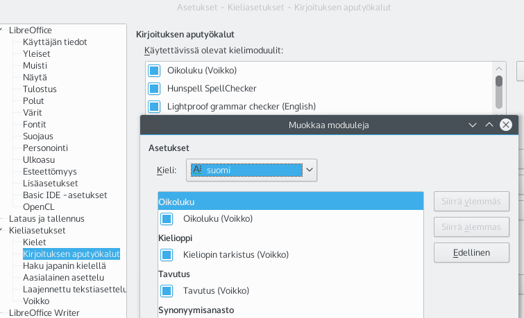

LibreOffice ei toistaiseksi sisällä kielityökaluja suomen kielelle. Ne saa käyttöön asentamalla Voikkoon perustuvan lisäosan nimeltä libreoffice-voikko.

Asennettuasi lisäosan varmista, että Voikko on aktivoitu kirjoituksen aputyökaluissa. Tämän voit tehdä valitsemalla Työkalut ► Asetukset ► Kieliasetukset ► Kirjoituksen aputyökalut (engl. Tools ► Options ► Language Settings ► Writing aids). Paina listan Käytettävissä olevat kielimoduulit (Available language modules) vieressä olevaa painiketta Muokkaa (Edit). Näyttöön avautuu uusi ikkuna. Valitse kielivalikosta suomi ja rastita kohdat Suomen kielen oikoluku (Voikko), Suomen kieliopin tarkistus (Voikko) ja Suomen kielen tavutus (Voikko). Jos listalla on muita oikeinkirjoitus- tai tavutusmoduuleja, poista rastit niiden edestä.
Oikoluvun toiminta edellyttää, että tekstin kieli on oikein asetettu. Uusien asiakirjojen oletuskieli valitaan asetuksista (Työkalut ► Asetukset ► Kieliasetukset ► Kielet ► Asiakirjojen oletuskielet). Tämä asetus vaikuttaa siis vain uusiin Writerissä luotuihin asiakirjoihin. Vanhoihin asiakirjoihin kielen saa vaihdettua avaamalla asiakirjan, valitsemalla koko tekstin (Muokkaa ► Valitse kaikki) ja asettamalla kielen fontin asetuksista (Muotoilu ► Fontti ► Fontti ► Kieli). Tämä voi olla tarpeen myös Microsoft Wordissa luotuja asiakirjoja käsiteltäessä, sillä Word usein arvaa (valitettavasti väärin) asiakirjan kielen.
Kätevimmin oikoluvun käyttö onnistuu, kun aktivoi automaattisen oikoluvun: Työkalut ► Automaattinen oikoluku.
Tavutus vaatii myös, että tekstin kieli on oikein asetettu. Katso kohdasta Oikoluku kuinka tämä tapahtuu. Useimmat haluavat tavutuksen tapahtumaan automaattisesti koko tekstissä. Tämä onnistuu, kun valitset koko tekstin (Muokkaa ► Valitse kaikki) ja otat automaattisen tavutuksen käyttöön kappaleen asetuksissa (Muotoilu ► Kappale ► Tekstin rivitys ► Tavutus automaattisesti).
Kirjoituksen aputyökaluja (eli oikoluku, tavutus, kieliopin tarkistus ja synonyymisanasto) voi asentaa valitsemalla valikosta Työkalut ► Kieli ► Lisää sanastoja verkosta. Linux-järjestelmissä voi vaihtoehtoisesti asentaa haluamansa kielen kielituen järjestelmän kieliasetusten kautta. Tällöin kielityökalut tulevat myös muiden ohjelmistojen käyttöön.
Samaa kieltä varten voi olla asennettuna useampiakin oikoluku- ja tavutuskomponentteja. Tätä varten voi asetuksissa (Työkalut ► Asetukset ► Kieliasetukset ► Kirjoituksen aputyökalut) valita, mitkä komponentit ovat käytössä milläkin kielellä. Listassa "Käytettävissä olevat kielimoduulit" olevista ruuduista voi tietyn komponentin ottaa käyttöön tai poistaa kokonaan käytöstä. Parasta on kuitenkin käyttää listan vieressä olevaa Muokkaa-painiketta ja asettaa kielimoduulit kielikohtaisesti. Oletusasetukset ovat yleensä järkevät, mutta aina uuden kielimoduulin tai sanaston asentamisen jälkeen (ja silloin jos jokin työkalu ei näytä toimivan) kannattaa tarkistaa, että kyseisen kielen kohdalla asetukset ovat oikein. Oikeinkirjoituksen tarkistusta varten voi olla valittuna useampikin kuin yksi oikolukukomponentti. Tällöin sana hyväksytään oikein kirjoitetuksi, jos ainakin yksi valituista komponenteista sen hyväksyy. Väärin kirjoitetuille sanoille korjausehdotukset tulevat listassa ylimpänä olevasta valitusta komponentista. Tavutuskomponenteista vain yksi voi olla valittuna.
Kaikkien kirjoituksen aputyökalujen toiminnan kannalta on tärkeää, että tekstin kieli on määritelty oikein. Writer sallii tekstin kielen määrittelyn yksittäisten sanojen tarkkuudella. Tämä onkin järkevää, sillä usein esimerkiksi suomenkieliseen tekstiin upotetut englanninkieliset osat ovat nimiä, lainauksia tai yksittäisiä sanoja eivätkä kokonaisia kappaleita. Sanan tarkkuudella tehty kielen määrittely varmistaa sen, että tekstin tavutus tapahtuu aina tavutettavan kielen säännöillä. Lisäksi oikoluku ei turhaan huomauta tuntemattomista sanoista. Haittapuolena tästä on se, että kieli pitää määritellä fontin asetuksissa (Muotoilu ► Fontti ► Fontti ► Kieli) josta muita tekstinkäsittelyohjelmia aikaisemmin käyttäneet eivät yleensä osaa sitä ensimmäisenä etsiä.
Uusien asiakirjojen oletuskieli voidaan asettaa ohjelman asetuksista (Työkalut ► Asetukset ► Kieliasetukset ► Kielet ► Asiakirjojen oletuskielet).
Voikolle on saatavissa perussanaston lisäksi myös erikoissanastoja, esimerkiksi lääketieteellinen sanasto, murresanasto ja ATK-sanasto. Vain yksi sanasto voi olla kerrallaan käytössä. Mikäli olet asentanut lisäosan, joka sisältää useita sanastoja, voit valita kulloinkin tekstillesi parhaiten sopivan sanaston asetuksista Työkalut ► Asetukset ► Kieliasetukset ► Voikko.
Kun kielimoduulit on oikein asetettu ja tekstin kieli kohdallaan, oikoluvun saa yksinkertaisimmin toimimaan aktivoimalla automaattisen oikoluvun työkalurivin painikkeesta . Korjausehdotukset väärin kirjoitetuille sanoille saa tällöin oikealla hiiren painikkeella virheellisesti kirjoitetun sanan päältä. Vaihtoehtoisesti voi oikoluvun suorittaa erikseen (Työkalut ► Oikeinkirjoituksen tarkistus).
Tekstin tavutuksen voi tehdä kolmella eri tavalla:
Manuaalisen ja "puoliautomaattisen" tavutuksen tekstiin jättämät tavutusvihjeet voi poistaa käyttämällä toimintoa Muokkaa ► Etsi ja korvaa. Toiminnon lisävalinnoissa on laitettava rasti ruutuun "Säännölliset lausekkeet", etsittäväksi tekstiksi laitetaan \x00AD ja korvaava teksti jätetään tyhjäksi. Lopuksi painetaan "Korvaa kaikki". Vaikka kappaleen automaattinen tavutus olisi käytössä, tavutusvihjeitä sisältäviä sanoja ei tavuteta muualta kuin tavutusvihjeen kohdalta. Tämän johdosta on mahdollista korjata automaattisen tavutuksen tekemiä virheitä lisäämällä tavutusvihje käsin oikeaan paikkaan.